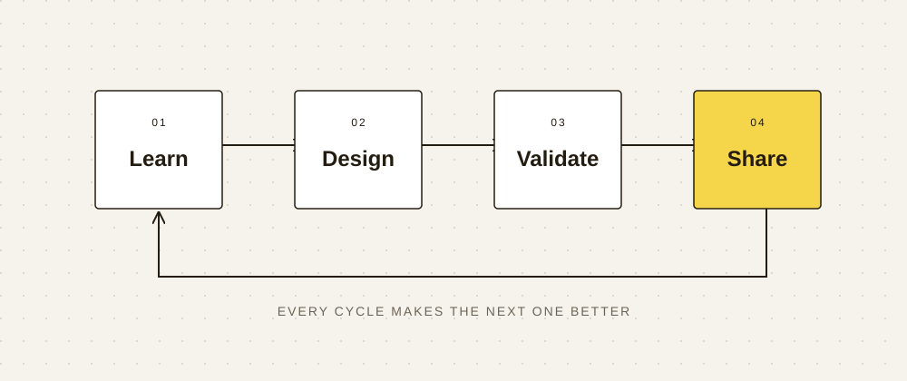

Engineering knowledge,
in motion.
Turn an exploration into something others can understand, reuse and share.
[Presenter] / [Team or organisation] · 20 October 2026
Three questions shape the story.
Why do it?
What is the problem?
Why does it matter?
What is the scope?
How does it work?
What is the approach?
What are the assumptions?
Can others reproduce it?
What did we learn?
What does the evidence show?
What are the limitations?
What should happen next?
Make the process visible.

Connect ideas to evidence.
Learn the foundations, develop a design, validate its limits, and share what others can reuse.
Put the conclusion in the heading, show the structure in a figure, and explain only the details readers need.
Presentation tip: Keep one main idea per slide. Move detailed tables and derivations to the companion document.
Evidence, with clear boundaries.
| Content | Web | |
|---|---|---|
| Figures & tables | Responsive layouts and links | Page layout with captions |
| Video & demos | Embedded playback and context | Cover + URL + key points |
| Reports & talks | Read at your pace or present | A4 document / 16:9 slides |
State the source, version and conditions.Clearly distinguish untested ideas from validated results.
Give the next engineer
something to build on.
Thank you. Let's talk.
[Your name / Contact details]
[Project URL / Companion document]